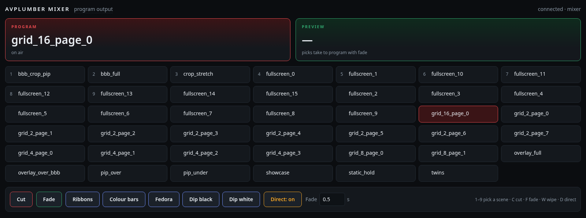

AVPlumber Live mixer
Code & setup guide
Sixteen sources — live browser pages and video files together — composited on one GPU canvas into a 1080×1920 portrait program, cut, faded and wiped from this page, with the whole show described by one JSON document.
- 16unique sources: live pages and clips, one decode or capture each
- 17–18%GPU on a Tesla T4, canvas at 30 fps
- 2.86 Mbit/son the wire from a 2 700 kbit/s WebRTC rendition
- 5media wipes held decoded in GPU memory, ~482 MiB
Browser pages arrive as DMA-BUFs from the dma-browser demo and are imported straight into CUDA; the compositor converts packed RGB to the NV12 canvas in its own draw pass, so pages and NVDEC video mix with no separate conversion. Wipe clips are decoded once at start and replayed from GPU memory, drawn as one alpha-blended layer by the compositor kernel the scenes use — no CPU scaling anywhere. The program is composited once and each rendition re-times and rescales it, so a second output costs an encode, not another composite.